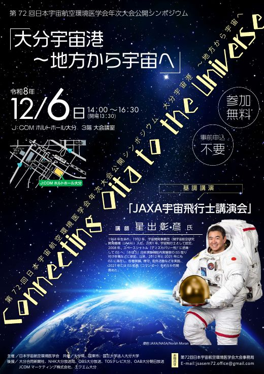

【2026.11.18】参加登録（事前登録）の受付を開始しました。
ご案内が大会の直前となり、お待たせいたしましたことをお詫び申し上げます。参加登録のページから、お申し込みください。
事前登録の締切：2026年12月2日（水）正午
お支払い：クレジットカード（VISA・Mastercard・Diners Club）。JCB・American Express はご利用いただけません。銀行振込をご希望の方は、大会事務局（jsasem72.office@gmail.com）までメールでご連絡ください。
お支払いが済むと、登録番号・QRコードと参加証（領収書を兼ねる PDF）をメールでお送りします。
ご案内が大会の直前となり、お待たせいたしましたことをお詫び申し上げます。参加登録のページから、お申し込みください。
事前登録の締切：2026年12月2日（水）正午
お支払い：クレジットカード（VISA・Mastercard・Diners Club）。JCB・American Express はご利用いただけません。銀行振込をご希望の方は、大会事務局（jsasem72.office@gmail.com）までメールでご連絡ください。
お支払いが済むと、登録番号・QRコードと参加証（領収書を兼ねる PDF）をメールでお送りします。

ポスターを見る ▶
【2026.11.16】12月6日（日）公開シンポジウム（市民公開講座）「大分宇宙港〜地方から宇宙へ」のポスターを掲載しました。
大会の最終日に、どなたでもご参加いただける公開シンポジウムを開催します。基調講演には、JAXA宇宙飛行士の星出 彰彦 氏をお迎えします。大分県・国東市・大分大学による取組紹介とパネルディスカッションもございます。
日時：2026年12月6日（日）14:00〜16:30（開場 13:30）
会場：J:COMホルトホール大分 3階 大会議室
参加費：無料（事前申込不要）
ポスターを見る ▶ プログラムの詳細 →
大会の最終日に、どなたでもご参加いただける公開シンポジウムを開催します。基調講演には、JAXA宇宙飛行士の星出 彰彦 氏をお迎えします。大分県・国東市・大分大学による取組紹介とパネルディスカッションもございます。
日時：2026年12月6日（日）14:00〜16:30（開場 13:30）
会場：J:COMホルトホール大分 3階 大会議室
参加費：無料（事前申込不要）
ポスターを見る ▶ プログラムの詳細 →
【2026.10.02】一般演題（ポスター発表）の募集を締め切りました。
2026年8月17日（月）から10月2日（金）までの募集期間に、多数のご投稿をいただき、ありがとうございました。採否は10月中旬にご登録のメールアドレスへお知らせします。ポスターの規格は採否のご連絡とあわせてご案内します。ご投稿いただいた方へ（今後の流れ）をご覧ください。
2026年8月17日（月）から10月2日（金）までの募集期間に、多数のご投稿をいただき、ありがとうございました。採否は10月中旬にご登録のメールアドレスへお知らせします。ポスターの規格は採否のご連絡とあわせてご案内します。ご投稿いただいた方へ（今後の流れ）をご覧ください。
【2026.08.25】一般演題（ポスター発表）の討論時間を拡充いたしました。
会員の先生より「平日の参加が難しく、金曜日の討論に参加できない」とのお声をいただき、大会長の判断により12月5日（土）12:00〜13:00 にもポスターコアタイムを新設いたしました。従来の12月4日（金）17:00〜18:00とあわせ、討論の時間は計2時間となります。
演者の先生は、いずれかの時間に、できれば両日ともポスターの前にお立ちください。土曜日のみのご参加でも、討論にご参加いただけます。
あわせて、優れたポスター発表の表彰を予定しております（一般枠・学生／大学院生枠。詳細は決まり次第ご案内いたします）。
一般演題の募集は2026年10月2日（金）で終了しました。
会員の先生より「平日の参加が難しく、金曜日の討論に参加できない」とのお声をいただき、大会長の判断により12月5日（土）12:00〜13:00 にもポスターコアタイムを新設いたしました。従来の12月4日（金）17:00〜18:00とあわせ、討論の時間は計2時間となります。
演者の先生は、いずれかの時間に、できれば両日ともポスターの前にお立ちください。土曜日のみのご参加でも、討論にご参加いただけます。
あわせて、優れたポスター発表の表彰を予定しております（一般枠・学生／大学院生枠。詳細は決まり次第ご案内いたします）。
一般演題の募集は2026年10月2日（金）で終了しました。
2026.11.16プログラム12月6日（日）公開シンポジウム（市民公開講座）「大分宇宙港〜地方から宇宙へ」のポスターを掲載しました（基調講演：JAXA宇宙飛行士 星出 彰彦 氏／参加無料・事前申込不要）
2026.10.02演題募集一般演題（ポスター発表）の募集を締め切りました
2026.09.18演題募集一般演題（ポスター発表）の募集期間を10月2日（金）まで延長しました
2026.08.25プログラム一般演題（ポスター発表）に土曜日のコアタイムを新設しました（討論時間を2倍に／ポスター表彰も実施予定）
2026.08.17演題募集一般演題（ポスター発表）の募集を開始しました（書式テンプレート公開中）
2026.08.16お知らせ第72回大会 公式ホームページを開設しました
2026.10.02演題募集一般演題の募集を締め切ります（延長後の締切）
2026.10（予定）演題募集演題の採否を通知します（10月中旬予定）
2026.10.31協賛ご協賛のお申し込みを締め切ります
2026.11（予定）直前情報プログラム最終版・宿泊情報を公開します
今後の予定を含みます。日程・内容は変更となる場合があり、確定した内容から随時更新いたします。